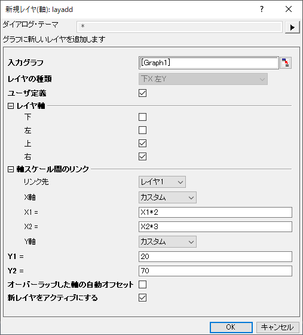

挿入: 新規レイヤ(軸)
グラフに新しいレイヤを追加します
1. layadd type:=topX;
2. layadd igp:=graph2 userdef:=1 bottom:=1 top:=1 linkto:=1 yaxis:=straight;
3. layadd userdef:=1 bottom:=0 top:=1 linkto:=1 xaxis:=custom x1:=X1+10 x2:=X2+50 yaxis:=custom y1:=20 y2:=70;
スクリプトからXファンクションにアクセスする場合、追加のオプションスイッチについてのページを参照してください。
| 表示 名 |
変数 名 |
I/O と データ型 |
デフォルト 値 |
説明 |
|---|---|---|---|---|
| 入力グラフ | igp |
入力 GraphPage |
|
操作するグラフを指定します。 |
| レイヤの種類 | type |
入力 int |
|
追加するレイヤの種類を指定します。
|
| ユーザ定義 | userdef |
入力 int |
|
レイヤのプロパティを定義するか指定します。 |
| 下 | bottom |
入力 int |
|
下X軸を表示するか指定します。種類変数がUser_Definedの時のみ編集できます。 |
| 左 | left |
入力 int |
|
左Y軸を表示するか指定します。種類変数がUser_Definedの時のみ編集できます。 |
| 上 | top |
入力 int |
|
上X軸を表示するか指定します。種類変数がUser_Definedの時のみ編集できます。 |
| 右 | right |
入力 int |
|
右Y軸を表示するか指定します。種類変数がUser_Definedの時のみ編集できます。 |
| リンク先 | linkto |
入力 int |
|
新規レイヤをリンクする親レイヤのインデックスを指定します。種類変数がUser_Definedの時のみ編集できます。 |
| X軸 | xaxis |
入力 int |
|
新規レイヤのX軸を親レイヤのX軸にどうリンクするか指定します。種類変数がUser_Definedの時のみ編集できます。
|
| X1 | x1 |
入力 string |
|
この変数は、子レイヤの軸の開始の値を設定します。数式を入力し、親レイヤのスケール値に対する子レイヤのスケールの開始値を指定します。userdef:=1 xaxis:=customの場合この変数を使用できます。
|
| X2 | x2 |
入力 string |
|
この変数は、子レイヤの軸の終了の値を設定します。数式を入力し、親レイヤのスケール値に対する子レイヤのスケールの終了値を指定します。 userdef:=1 xaxis:=customの場合この変数を使用できます。
|
| Y軸 | yaxis |
入力 int |
|
新規レイヤのY軸を親レイヤのY軸にどうリンクするか指定します。種類変数がUser_Definedの時のみ編集できます。
|
| Y1 | y1 |
入力 string |
|
この変数は、子レイヤの軸の開始の値を設定します。数式を入力し、親レイヤのスケール値に対する子レイヤのスケールの開始値を指定します。Userdef:=1 yaxis:=customの場合この変数を使用できます。
|
| Y2 | y2 |
入力 string |
|
この変数は、子レイヤの軸の終了の値を設定します。数式を入力し、親レイヤのスケール値に対する子レイヤのスケールの終了値を指定します。Userdef:=1 yaxis:=customの場合この変数を使用できます。
|
| オーバーラップした軸の自動オフセット | offset |
入力 int |
|
軸が重複しないように新規レイヤの軸をオフセットするか指定します。デフォルトは0です。 |
| 新レイヤのアクティベーション | activate |
入力 int |
|
新しく追加されたレイヤをアクティブにするか指定します。 |
このXファンクションは、アクティブグラフに新しいレイヤを追加するのに使います。どの軸を表示するか、アクティブレイヤに新しいレイヤをリンクするかどうかを指定することができます。新しいレイヤが親レイヤにリンクされるとき、軸スケールをどのようにリンクするかも指定することができます。最初のレイヤの種類「下X 左Y」を除いて、他のレイヤタイプを選択すると、単位がリンクされたレイヤの%になります。
1.右Y軸をグラフに追加して、この新しいレイヤをアクティブレイヤにリンクするには、挿入: 新規レイヤ(軸): 右Y（Xスケール・寸法リンク）を選択します。
2.アクティブレイヤにリンクした上X軸と右Y軸にを追加するには、挿入: 新規レイヤ(軸): ダイアログを開く…を選択し、ダイアログ内の設定を下図のように変更します。(アクティブグラフをGraph1とします)

3.OKをクリックして、ダイアログを閉じます。